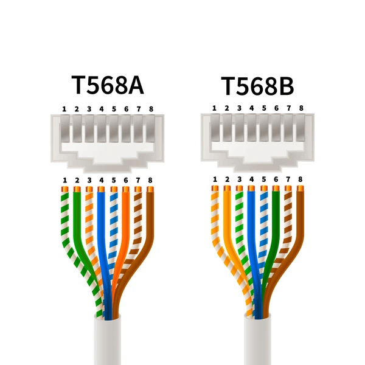

Logica de Mapas
Los Organismos estandarizadores regulan practicamente todo lo que haces en un sentido tecnico, por ejemplo, el estandar HDMI se encuentra presente en la gran mayoria de dispositivos de consumo masivo, el porque? si nos estandarizamos a usar solo un tipo de cable y entrada no solo reducimos la cantidad de otros cables si no que aumentamos la compatibilidad a gran escala y se evita lo mas posible los errores.
Ahora, aplicado al mapa conceptual ocurre lo mismo pero con los estandares de red, por ejemplo el estandar en el puerto RJ45 EIA-568, en sus dos variantes que son T568A y la T568B. Son estandares con el fin de que en casi cualquier dispositivo de red como puede ser routers, racs, swicthes y computadoras puedan tener comunicacion sin perdida ni incompatibilidades.

Imagen del estandar T568
Diciendolo en palabras Criollas, el fin de este estandar en particular es poder llegar a cualquier lugar y poder conectar una computadora a un router sin tener problemas de conexion. Es de esta manera que los estandares interactuan con las redes y las telecomunicaciones.
Otros estandares como los IEEE 8xx.xx rigen a nivel mundial el comportamiento de las redes como la red MAN y WAN donde Rodolfo R.V menciona que en el estandar 802.1 establece las interconexiones entre redes y otros tipos de comportamientos.
En el caso particular venezolano, tenemos la LOCTI(Ley Organica de Ciencia, Tenologia e Innovacion) la cual rige las normativas y aplicaciones dentro del pais(es decir que es solo a nivel nacional, no regional ni internacional) y luego las organizaciones como Conatel que se encargan de estandarizar y distribuir licencias.